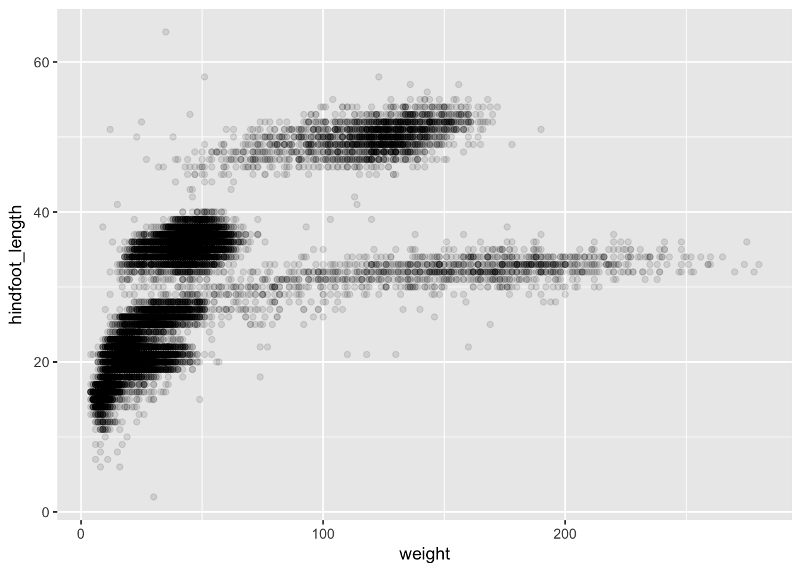
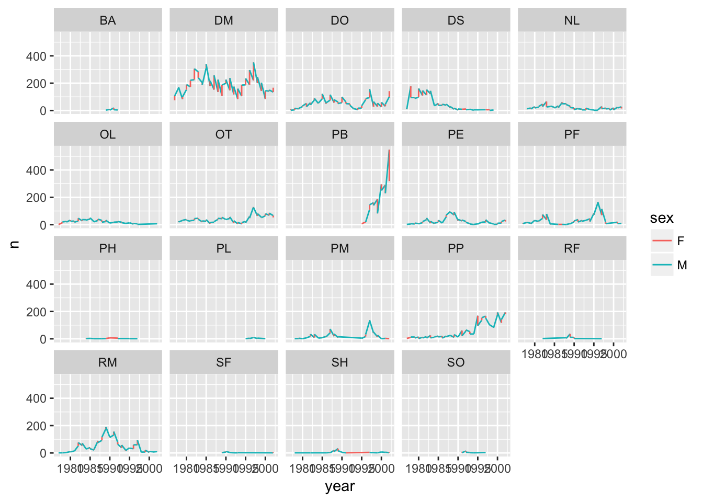
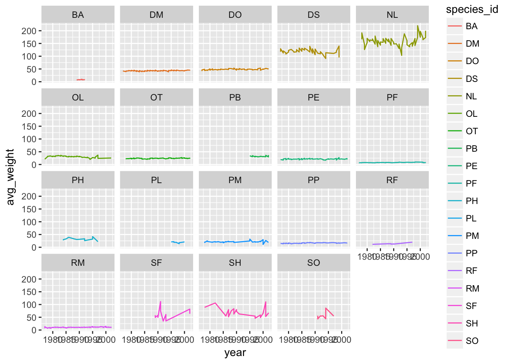
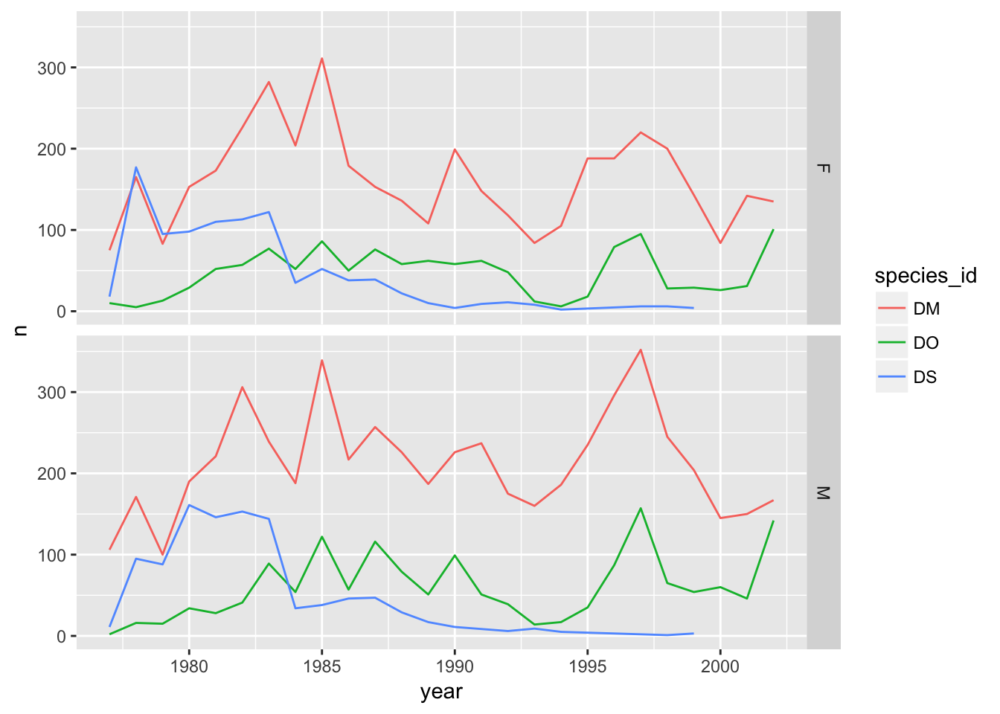

Data visualization with ggplot2
Disclaimer
We will be using the functions in the ggplot2 package. R has powerful built-in plotting capabilities, but for this exercise, we will be using the ggplot2 package, which facilitates the creation of highly-informative plots of structured data.
Learning Objectives
- Visualize some of the mammals data from Figshare surveys.csv
- Understand how to plot these data using R ggplot2 package. For more details on using ggplot2 see official documentation.
- Building step by step complex plots with the ggplot2 package
#>
#> Attaching package: 'dplyr'#> The following objects are masked from 'package:stats':
#>
#> filter, lag#> The following objects are masked from 'package:base':
#>
#> intersect, setdiff, setequal, unionPlotting with ggplot2
There are two main systems for making plots in R: “base graphics” (which are the traditional plotting functions distributed with R) and ggplot2, written by Hadley Wickham following Leland Wilkinson’s book Grammar of Graphics. We’re going to show you how to use ggplot2. It’s may seem a bit complicated at first, but once you get a hang of it, you’ll be able to make really useful visualizations quite rapidly.
We first need to load the dplyr and ggplot2 packages.
library(ggplot2)
library(dplyr)I’ll assume the data are available, and we’ll focus on the “cleaned” version, surveys_complete.
Let’s first make a scatterplot of hindfoot length vs weight. Here’s the code to do it.
ggplot(surveys_complete, aes(x = weight, y = hindfoot_length)) + geom_point()
Two key concepts in the grammar of graphics: aesthetics map features of the data (for example, the weight variable) to features of the visualization (for example the y-axis coordinate), and geoms concern what actually gets plotted (here, each row in the data becomes a point in the plot).
Another key aspect of ggplot2: the ggplot() function creates a graphics object; additional controls are added with the + operator. The actual plot is made when the object is printed.
p1 <- ggplot(surveys_complete, aes(x=weight, y=hindfoot_length))
p2 <- p1 + geom_point()
print(p2)
If we saved the pieces like this, we could apply other options afterwards. For example, if we wanted weight on a log scale:
p2 + scale_x_log10()This makes it kind of easy to try out different things. For example, we could plot the x-axis on a square root scale.
p2 + scale_x_sqrt()
Challenge
Make a scatterplot of hindfoot_length vs weight, but only for the species_id, "DM".
Other aesthetics
For scatterplot, additional aesthetics include shape, size, and color. Also “alpha” (for transparency of points).
Let’s make a template for our plot, to make modifications easier.
surveys_plot <- ggplot(surveys_complete, aes(x = weight, y = hindfoot_length))- adding transparency (alpha)
surveys_plot + geom_point(alpha = 0.1)
- adding colors
surveys_plot + geom_point(alpha = 0.1, color = "slateblue")surveys_plot + geom_point(alpha = 0.1, color = "slateblue", size=0.5)
Things get more interesting when we assign these aesthetics to data.
surveys_plot + geom_point(alpha = 0.1, aes(color = species_id))Challenge
Use dplyr to calculate the mean weight and hindfoot_length as well as the sample size for each species.
Make a scatterplot of mean hindfoot_length vs mean_weight, with the sizes of the points corresponding to the sample size.
Layers
You can use geom_line to make a line plot. For example, we could plot the counts of species by year.
count_by_year <- surveys_complete %>%
group_by(year) %>%
tally
p <- ggplot(count_by_year, aes(x=year, y=n))
p + geom_line()
You can use both geom_line and geom_point to make a line plot with points at the data values.
p + geom_line() + geom_point()
This brings up another important concept with ggplot2: layers. A given plot can have multiple layers of geometric objects, plotted one on top of the other.
If you make the lines and points different colors, we can see that the points are placed on top of the lines.
p + geom_line(color="lightblue") + geom_point(color="violetred")If we switch the order of geom_point and geom_line, we’ll reverse the layers.
p + geom_point(color="violetred") + geom_line(color="lightblue")
Note that aesthetics included in the call to ggplot() (or completely separately) are made to be the defaults for all layers, but we can separately control the aesthetics for each layer. For example, we could color the points by year:
p + geom_line() + geom_point(aes(color=year))Compare that to the following:
p + geom_line() + geom_point() + aes(color=year)
Challenge
Make a plot of counts of species_id "DM" and "DS" by year. See if you can make the lines black but the points colored by species.
Groups
One’s first attempt at the previous challenge may look like this:
counts_dm_ds <- surveys_complete %>% filter(species_id %in% c("DM", "DS")) %>%
group_by(species_id, year) %>% tally
p <- ggplot(counts_dm_ds, aes(x=year, y=n))
p + geom_line() + geom_point(aes(color=species_id))
The points get connected left-to-right, which is not what we want.
If we make the color=species_id aesthetic global, we don’t have this problem.
p + geom_line() + geom_point() + aes(color=species_id)Alternatively, we can use the group aesthetic, which indicates that certain data points go together. This way the lines can be a constant color.
p + geom_line(aes(group=species_id)) + geom_point(aes(color=species_id))We could also make the group aesthetic global
p + aes(group=species_id) + geom_line() + geom_point(aes(color=species_id))
Univariate geoms
We’ve focused so far on scatterplots, but one can also create one-dimensional summaries, such as histograms or boxplots.
Challenge
Try using geom_histogram() to make a histogram visualization of the distribution of weight.
Hint: You want weight as the x-axis aesthetic. Try specifying bins in geom_histogram().
Boxplot
Visualising the distribution of weight within each species.
ggplot(surveys_complete, aes(x = species_id, y = hindfoot_length)) +
geom_boxplot()By adding points to boxplot, we can have a better idea of the number of measurements and of their distribution:
ggplot(surveys_complete, aes(x = species_id, y = hindfoot_length)) +
geom_boxplot(alpha = 0) +
geom_jitter(alpha = 0.3, color = "tomato")
Notice how the boxplot layer is behind the jitter layer? What do you need to change in the code to put the boxplot in front of the points such that it’s not hidden.
Challenge
A variant on the box plot is the violin plot. Use geom_violin() to make violin plots of hindfoot_length by species_id.
Faceting
ggplot has a special technique called faceting that allows to split one plot into multiple plots based on a factor included in the dataset. We will use it to make one plot for a time series for each species.
yearly_counts <- surveys_complete %>% group_by(year, species_id) %>% tally
ggplot(yearly_counts, aes(x = year, y = n, group = species_id, colour = species_id)) +
geom_line() +
facet_wrap(~ species_id)
Now we would like to split line in each plot by sex of each individual measured. To do that we need to make counts in data frame grouped by sex.
Challenge
Calculate counts grouped by year, species_id, and sex
make the faceted plot splitting further by sex (within each panel)
color by sex rather than species
Suppose I make a similar plot of average weight by species:
yearly_weight <- surveys_complete %>%
group_by(year, species_id, sex) %>%
summarise(avg_weight = mean(weight, na.rm = TRUE))
ggplot(yearly_weight, aes(x=year, y=avg_weight, color = species_id, group = species_id)) +
geom_line() +
facet_wrap(~ species_id)
Why do we see those steps in the plot?
Oops need to group by sex
yearly_weight <- surveys_complete %>%
group_by(year, species_id, sex) %>%
summarise(avg_weight = mean(weight, na.rm = TRUE))
ggplot(yearly_weight, aes(x=year, y=avg_weight, color = sex, group = sex)) +
geom_line() +
facet_wrap(~ species_id)facet_grid
The facet_wrap geometry extracts plots into an arbitrary number of dimensions to allow them to cleanly fit on one page. On the other hand, the facet_grid geometry allows you to explicitly specify how you want your plots to be arranged via formula notation (rows ~ columns; a . can be used as a placeholder that indicates only one row or column).
## One column, facet by rows
yearly_weight %>% filter(species_id %in% c("DM", "DO", "DS")) %>%
ggplot(aes(x=year, y=avg_weight, color = species_id, group = species_id)) +
geom_line() +
facet_grid(sex ~ .)
# One row, facet by column
yearly_weight %>% filter(species_id %in% c("DM", "DO", "DS")) %>%
ggplot(aes(x=year, y=avg_weight, color = species_id, group = species_id)) +
geom_line() +
facet_grid( ~ sex)# separate panel for each sex and species
yearly_weight %>% filter(species_id %in% c("DM", "DO", "DS")) %>%
ggplot(aes(x=year, y=avg_weight, color = species_id, group = species_id)) +
geom_line() +
facet_grid(species_id ~ sex)